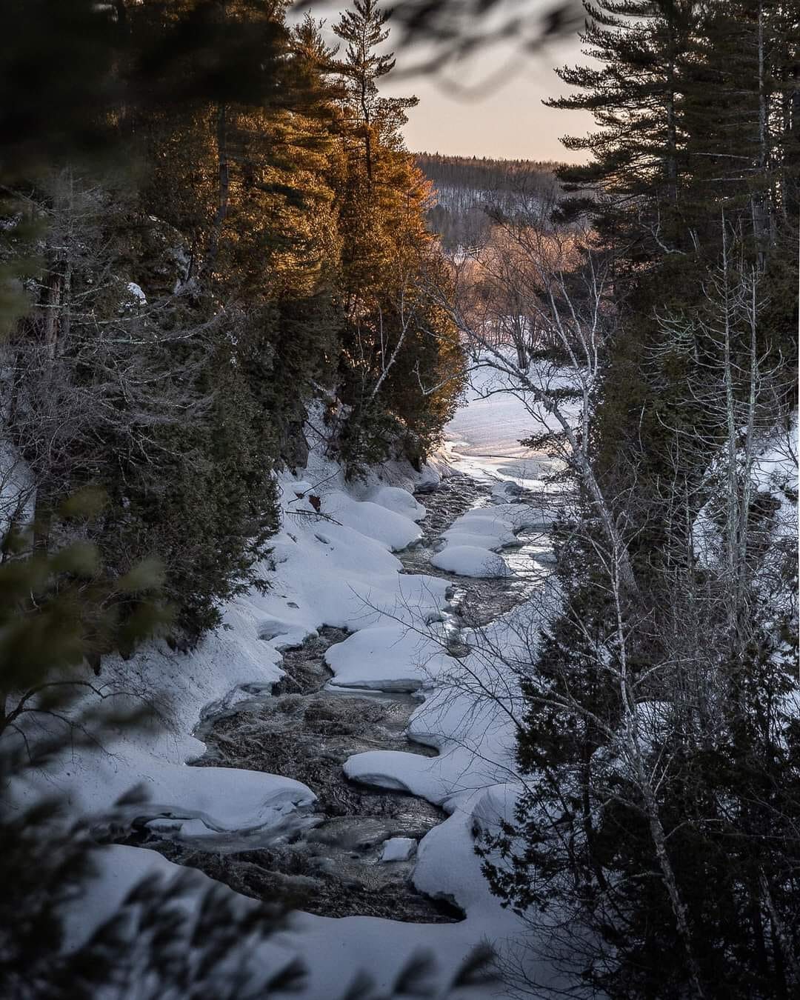
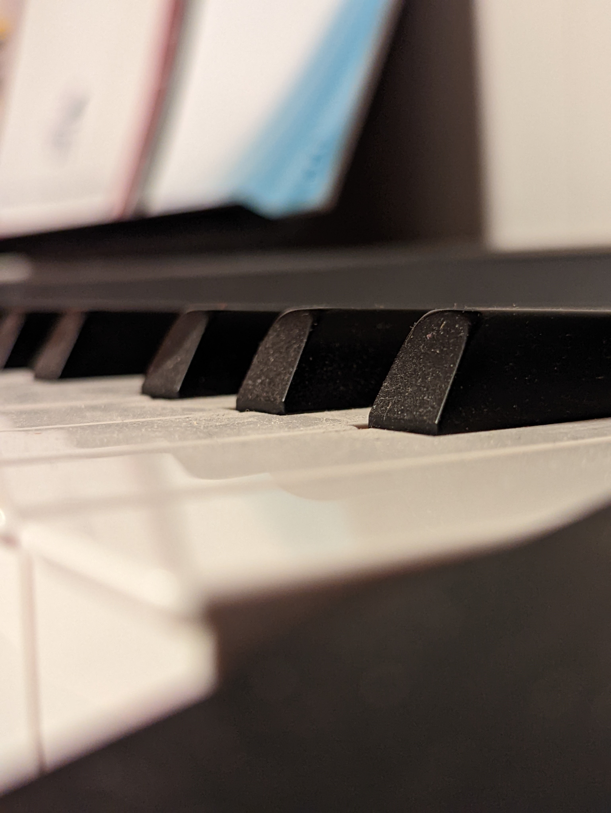
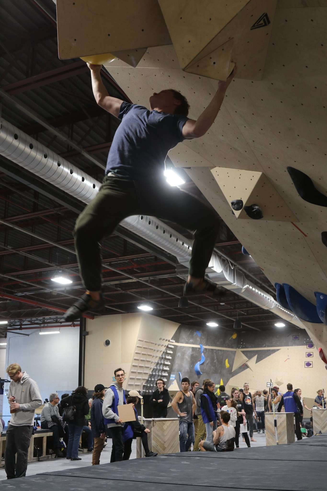
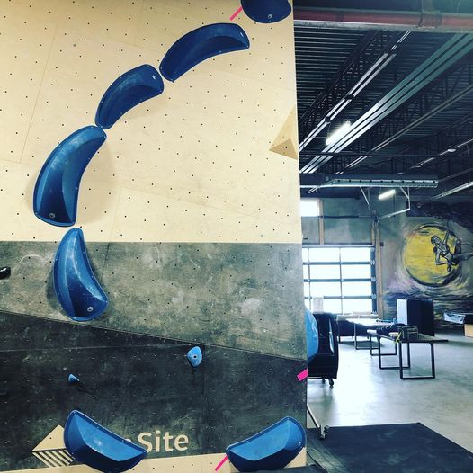
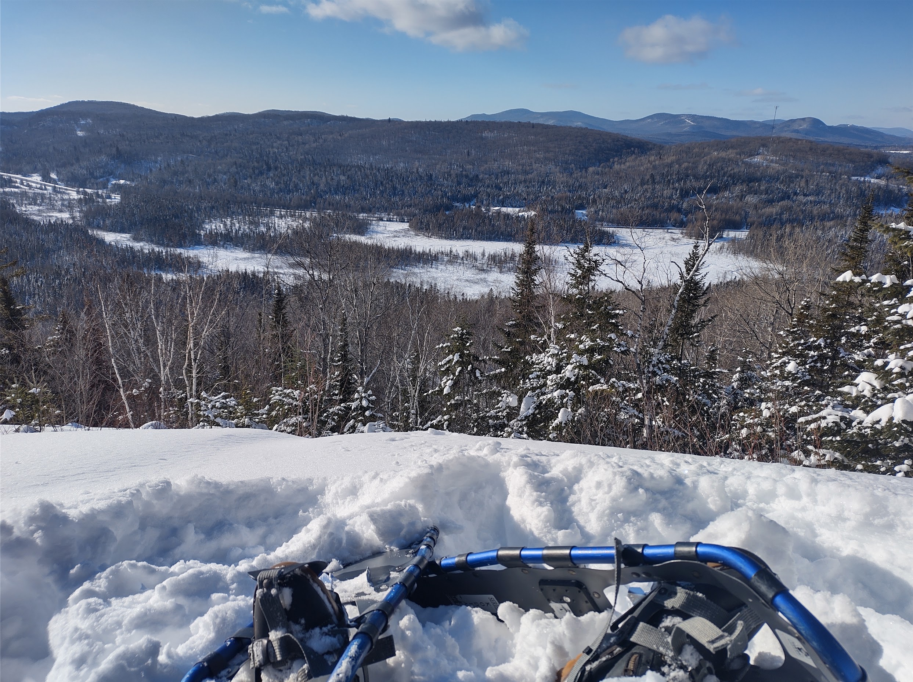
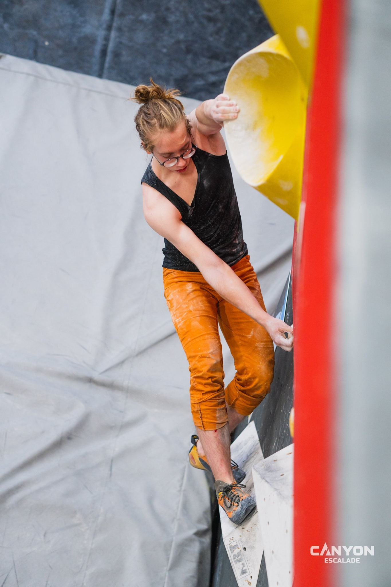

Chemin de Compostelle par Ludwig-E.DufourFlower girl v1 par Ludwig-E.Duofur

Fantaisie punk par Ludwig-E.DufourFantaisie punk par Ludwig-E.Dufour

Tueur d'encre par Ludwig-E.DufourMulti-visage par Ludwig-E.DufourAikido training par Ludwig-E.DufourAikido training par Ludwig-E.Dufour
Visage de la mort par Ludwig-E.Dufour

Flower girl V2 par Ludwig-E.Dufour

Multi-Personalité par Ludwig-E.Dufour

Ascencion manga par Ludwig-E.Dufour
Totoro esquisse par Ludwig-E.DufourMulti-Personalité par Ludwig-E.DufourKermit meme par Ludwig-E.Dufour

Flower girl V2 par Ludwig-E.Dufour